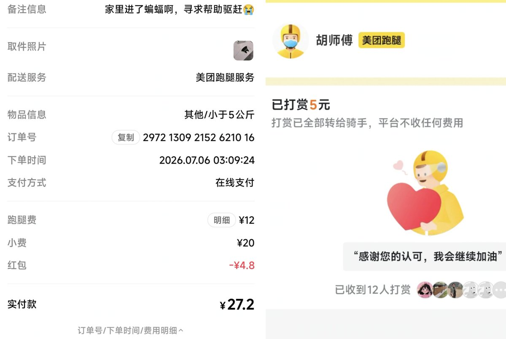

🍥神楽坂·雨檬&梦雨🏳️⚧️🍬🍬🍬
@RainLemon0715
@anyue_1207 😭

黯月
@anyue_1207
啊啊啊啊～家里进了蝙蝠，孩子一开始真没看清那是啥，它飞的超级超级快……到处撞
孩子一开始真没在意啊，只知道好像有声音的样子，还以为啥东西掉了，检查了下，大概是风刮掉了什么，结果过了10分钟它，它飞出来了😭孩子就关门躲起来。后面去了🍠，查到是蝙蝠
还好有美团跑腿救了我，花了32大洋 https://t.co/ns0H33jVhF